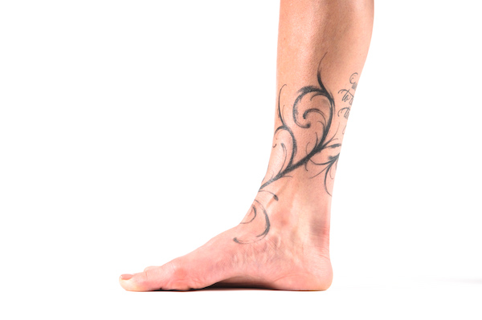

Set 1
Toe Fan
Great Toe Down
Rock Out
Heel Raise

Doming
Towel grab
Arch massage
Pick up
 as well as your toes. Increased strength and flexibility in your toes can lead to a stronger pushoff for runners/walkers and better balance.")
 with your feet. Smart feet are the base of a strong, healthy kinetic chain, and can lead to greater function all the way up the body.")